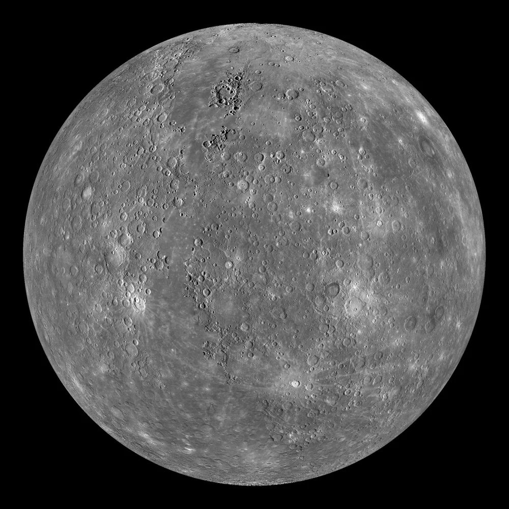

Our Solar System
Mercury: small, hot and airless
Mercury is the smallest planet in the Solar System and the closest to the Sun: a rocky planet with 0.38 Earth radii and 0.055 Earth masses. It orbits the Sun in 88 days at 0.39 astronomical units (AU). It has no atmosphere to retain heat; temperatures reach up to 430 °C by day and fall as low as −180 °C at night.
As a comparison, Mercury stands for small, hot rocky worlds without a substantial atmosphere. For the exoplanet LHS 3844 b, in a tight orbit around its star, Spitzer Space Telescope measurements suggest a surface that may resemble Mercury's or the Moon's, with little to no atmosphere.
Moons: Mercury has no moons.
Sources: NASA (NSSDCA): "Planetary Fact Sheet – Metric.", accessed 2026-11-20; NASA (NSSDCA): "Planetary Fact Sheet – Ratio to Earth Values.", accessed 2026-11-20; NASA Science: "Mercury: Facts.", accessed 2026-11-20; NASA Science: "Exoplanets – Planet Types: Overview.", accessed 2026-11-20; NASA/JPL: "NASA Gets a Rare Look at a Rocky Exoplanet's Surface.", accessed 2026-11-20